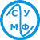

| SUMF - indeks | ||
| Razno | ||
| Bilten - BIT | ||
| Rokovi | ||
| Kapuera | ||
| Dokumenti | ||
| Program | ||
| Istorijat | ||
| Istorija matematike | ||
| Organizacija | ||
| Poslovnik | ||
| Èlanovi | ||
| Ankete | ||
| dizajn: [strahinja] |

| SONjA KOVALjEVSKA | |||
| 6. oktobar 2001. | |||
|
Sonja Kovaljevska nije bila samo veliki matematièar veæ i pisac i borac za ženska prava u 19. veku, dakle jedna zaista izuzetna žena. Njena borba da sebi obezbedi najbolje moguæe obrazovanje je omoguæila ženama da pohaðaju univerzitetske studije kao ravnopravni studenti. Osim toga, njena dostignuæa u matematici su naterala njene muške kolege da preispitaju svoja staromodna shvatanja o ženskoj inferiornosti u odnosu na muškarce u nauènom radu. Sonja Krukovski Kovaljevska (Sonya Krukovski-Kovalevskaya) roðena je 1850. u ruskoj plemiækoj porodici i odrasla je okružena luksuzom. Meðutim, nije bila baš sreæno dete. Oseæala se zapostavljenom, kao srednje dete, pored svoje starije veoma voljene sestre, Anite i mlaðeg brata, Feðe, naslednika. Tokom najveæeg dela detinjstva imala je veoma strogu guvernantu koja je vaspitavanje Sonje da postana dama shvatila kao svoju liènu misiju. Kao posledica toga, Sonja je postala poprilièno nervozna i povuèena što ju je pratilo celog života. Matematiku je otkrila kao veoma mlada. Ona tvrdi da je dobro prouèila beleške svog oca koje su stajala na zidu njene sobe umesto tapeta. Takoðe, ona smatra da je za njenu ljubav prema matematici najviše "kriv" njen ujak Petar koji je dosta vremena provodio sa njom rasplarvaljajuæi o pojedinim matematièkim pojmovima. Kada je imala 14, sama je nauèila triginometriju da bi mogla da shvati poglavlje o optici u knjizi iz fizike koju je tada èitala. Autor te knjige i njen komšija, profesor Tirtov (Tyrtov), bio je impresioniran njenim sposobnostima i ubedio je Sonjinog oca da joj dozvoli da ode u St. Peterburg da nastavi školovanje. Po završetku srednje škole Sonja je èvrsto odluèila da nastavi školovanje na univerzitetskom nivou. Meðutim, najbliži univerzitet otvoren i za žene bio je u Švajcarskoj, a u to doba mladim, neudatim ženama nije bilo dozvoljeno da putuju same. Kako bi rešila taj problem, Sonja se, septembra 1868, udala za Vladimira Kovaljevskog. Prvih par meseci braka su proveli u Petersburgu a zatim otišli u Hajdelberg gde je Sonja prvi put privukla pažnju. Svima je bila interesantna tiha mlada Ruskinja sa izvanrednim akademskim ugledom. 1870, Sonja je odluèila da svoje studije nastavi kod Karla Vajerštrasa (Karl Weierstrass) na Univerzitetu u Berlinu. Vajerštras je veæ tada smatran za najuglednijeg mateamtièara svog vremena ali u poèetku nije Sonju shvatao ozbiljno. Dao joj je par problema da reši i tek posle pregledanja njenog rada otkrio je kakav genije stoji pred njim. Odmah je poèeo da je privatno poduèava jer univerzitet tada nije dozvoljavao ženama da studiraju. Sonja je kod njega uèila 4 godine. Jednom prilikom je rekla: "Te godine imale su najveæi moguæi uticaj na moju karijeru kao matematièara. Tada sam konanèno i neopozivo odluèila koji æu pravac slediti u svom radu: sav moj rad biæe u duhu Vajerštrasa." Na kraju te èetiri godine imala je veæ tri rada za sobom za koja se nadala da æe joj doneti diplomu. Jedan od njih, "O parcijalnim diferencijalnim jednaèinama", objavljen je u Krelovom (Crelle) èasopisu, što je bila velika èast za nepoznatog matematièara. U junu 1874, Sonja Kovaljevska je dobila doktorsku titulu od Univerziteta u Getingenu (Gottingen). I pored te prestižne titule i Vajerštrasove pomoši nije uspevala da pronaðe posao. Ona i Vladimir su se vratili u Palobino, Sonjinoj porodici. Ubrzo po njenom povratku kuæu njen otac je preminuo. Posle oèeve smrti Sonja i Vladimir su se napokon zaljubili. Iz te ljubavi se rodila jedna kæi. Tokom svog boravka kod kuæe Sonja je u potpunosti zanemarila matematiku. Umesto toga, okuæala se u književnosti, pišuæprièe, pozorišne kritike i nauène èlanke za novine. 1880, Sonja se vratila matematici sa novim žarom. Na jednoj konferenciji izlagala je rad o integralima i bila je veoma dobro primljena. Ponovo se našla u situaciji da traži posao u oblasti koju najviše voli - matematici. Odluèila je da se vrati Vajerštrasu. Nedugo po dolasku u Berlin saznala je za Vladimirovu smrt. On je poèinio samoubistvo kada je sav njegov posao propao. Tuga je uèinila da radi više nego ikad. Konaèno, 1883, Sonji se ponovo osmehnula sreæa. Dobila je poziv da predaje na Univerzitetu u Štokholmu od Vajerštrasovog bivšeg uèenika Goste Mitag - Leflera. U poèetku je to bilo samo privremeno zaposlenje, ali pet godina rada je bilo dovoljno da uprava Univerziteta shvati koliko je Sonja bila znaèajna. Usledio je period velikih uspeha. Dobila je trajno zaposlenje na Univerzitetu, postala je urednik matematièkog èasopisa, napisala je svoj prvi rad o kristalima i, 1885, postala je šef katedre za matematiku. U meðuvremenu je sa prijateljicom Anom Lefler napisala pozorišni komad "Borba za sreæu". 1887, Sonja je ponovo dobila užasavajuæe vesti. Smrt njene sestre, Anite, je bila pogotovo teška so obzirom na to da su njih dve bile veoma bliske. Na sreæu, nedugo potom je došao njen najveæi trijumf. 1888, predala je rad "O rotaciji krutog tela oko fiksirane taèke" na takmièenje za nagradu Bordin Francuske Akademije nauka i - pobedila. "Pre Sofije Kovaljevski (Sonje Kovaljevske) jedino su razmatrani sluèajevi rotiranja simetriènog tela" (Rapaport). U svom radu, Sonja je razvila teoriju o rotaciji nesimetriènog krutog tela kod koga se centar mase ne nalazi na osi rotacije. Rad je bio toliko uspešan da je nagrada sa 3000 poveæana na 5000 franaka. Otprilike u isto vreme, još jedan èovek je ušetao u Sonjin život. Maksim Kovaljevski je došao u Štokholm da održi niz predavanja. Tu je upoznao Sonju i oni su imali burnu vezu. Osnovni problem bilo je to što su oboje bili strasno vezani za svoj rad i nisu želeli da ga napuste zbog drugog. Rad je odveo Maksima iz Štokholma i on je želeo da Sonja napusti svoj teŠko steèeni položaj da bi postala njegova žena. Sonja je dosta hladno odbila tako nešto ali i pored toga nije mogla da podnese da ga izgubi. Ostala je u Francuskoj tokom leta sa njim i zapala u još jedno stanje depresije. Ponovo se okrenula pisanju i do kraja svog boravka u Francuskoj završila je "Seæanja na detinjstvo". U jesen 1889, vratila se u Štokholm. I dalje je bila tužna zbog Maksima iako je žesto putovala i Francusku da ga vidi. Kao posledica svega toga, razbolela se od upale pluæa i depresije. Desetog februara 1891, Sonja Kovaljevska je umrla. Ceo nauèni svet je s tugom reagovao na tu vest. Tokom svoje karijere, Sonja je objavila deset radova iz matematike i matematižke fizike i nekoliko književnih dela. Veliki deo njenih nauènih radova sadržao je fundamentalne teorije ili je otvarao vrata buduæim otkriæima. Nema sumnje da je Sonja Krukovski Kovaljevska bila izvanredna osoba. Predsednik Akademije nauka, koji je Sonji uruèio nagradu Bordin, jednom je rekao: "Naši èlanovi smatraju da njen rad svedoèi ne samo o dubokom i širokom obrazovanju, veæ i o umu neverovatne inventivnosti". Perl, Terry. "Sonya Kovalevskaya" Math Equals: Biographies of Women Mathematicians and Relates Activities. Rappaport, Karen D. "S. Kovalevsky: A Mathematical Lesson." The American Mathematical Monthly 88 (October 1981)
|
|||